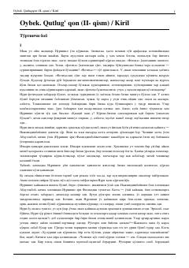

QQXX asr boshlaridagi Toshkent xonadonlaridagi murakkab oilaviy munosabatlar tasvirlangan tarixiy roman.
Ushbu asar XX asr boshlaridagi Toshkent hayoti, oilaviy munosabatlar va ijtimoiy qatlamlar o'rtasidagi ziddiyatlarni tasvirlaydi. Roman Nuriniso ismli qizning boy xonadonga kelin bo'lib tushishi va u yerdagi murakkab ichki muhit, xususan, qaynona-kelin hamda kundoshlar o'rtasidagi munosabatlar orqali o'sha davr jamiyatini ochib beradi.